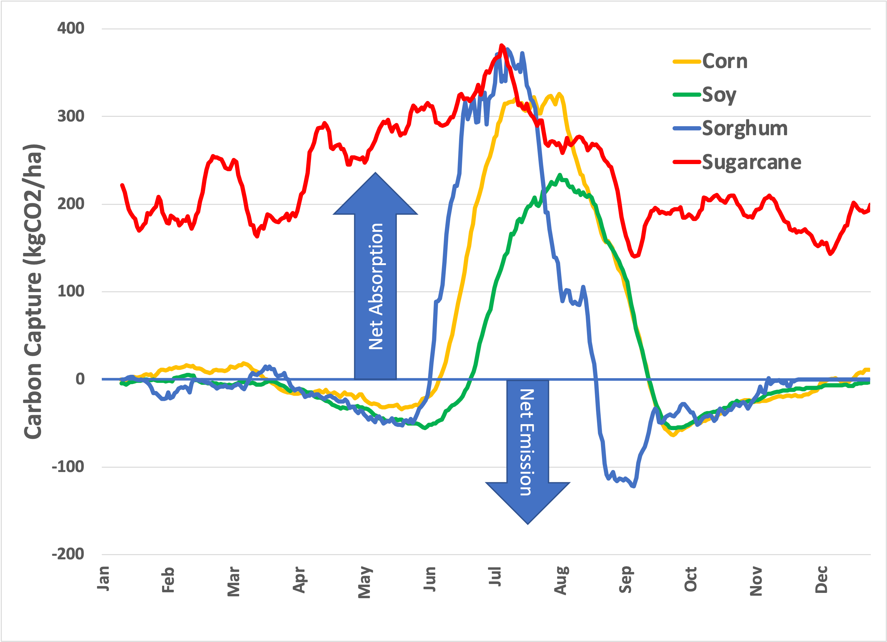

The title this time is a misappropriation, but it follows from the earlier ones, so we are where we are. In the last installment, I established that it does matter what’s planted. The previous installments have documented the following observations, based not on models but on data :
-
As a general rule, it matters that we plant (agricultural land is observably better than natural ecosystems), 1 primarily because humans remove carbon from the system by harvest. The higher capacity of natural ecosystems to capture carbon is offset by the tendency of natural ecosystems to respire.
-
It matters what we plant, primarily because agriculture uses annual crops as a rule. 2 The observation is that C4 grasses like corn outperform C3 crops like soybeans. There’s a biochemical basis for this difference: C4 biochemistry is better suited to direct sunlight, the situation that is typical for large-scale agriculture.
I honestly didn’t quite know what the answer was going to be when I began this series. However, I intuited that peak photosynthesis readings measured by CO2 absorption would be about the same. There’s a simple technical reason for this expectation: All plants share chloroplasts with common biochemistry, so all plants must share the same fundamental biochemical and energetic constraints. In other words, reasoning from first principles (to be verified by data), I did not expect some plants to possess a mystical ability to capture more CO2 than others.
In this installment, we’ll look at two other C4 plants, sorghum, and sugarcane. Data is more limited for these crops. The sugarcane data comes from America’s only tropical climate zone, Hawaii, so we’ll need to look at data over an entire calendar year. Using the same data processing as I used last time for Illinois/Minnesota corn/soy, here’s what is observed:

In this instance, I’ve averaged each crop over all locations and measurements by day of the year. Sorghum (grain variety, also known as milo) was measured in only one area in Oklahoma. The sugarcane sites are all on the island of Maui, within about six miles of each other, but with different microclimates.
So, the hypothesis that traces back to biochemistry seems to hold. C4 crops are uniformly better than soybean in capturing carbon. According to the annotation on the data, the cane fields are:
Continuous, irrigated, sugarcane cultivation for >100 years. Practice is to grow plant sugarcane for 2 years, dry down, burn leaves, harvest cane, and then till and replant very shortly after harvest.
Like the other crops, sugarcane is harvested, meaning carbon is removed for human use. Unlike corn and sorghum, sugarcane is typically propagated from stalks rather than seeds, so the unproductive period between harvests is minimized. As a tropical plant, it also grows year-round: A sugarcane field absorbs carbon every day of the year. However, the current practice is to burn the leaves and extra biomass (known as bagasse) and to use cane sugar as feedstock. So the harvested carbon is returned to the atmosphere, but by human actions.
We can add up the daily carbon absorption of sugarcane to see the numbers pencil out. The sum total amount absorbed is measured to be (on average) 85 metric tons per hectare per year. In an earlier installment, 3 I estimated 35 tons per acre, which (at 2.5 acres per hectare) is remarkably close.
So, guided by the data, it’d be better to grow as much sugarcane as possible in tropical regions.
It’s an interesting thought experiment: Would it be better for the planet if the Amazon rainforest were clear-cut to make way for a dramatic expansion of sugarcane plantations? I appreciate that the likelihood of such an approach making progress in our current eco-political climate is close to zero, but it’s where Science leads us!
Thank you for reading Healing the Earth with Technology. This post is public so feel free to share it.